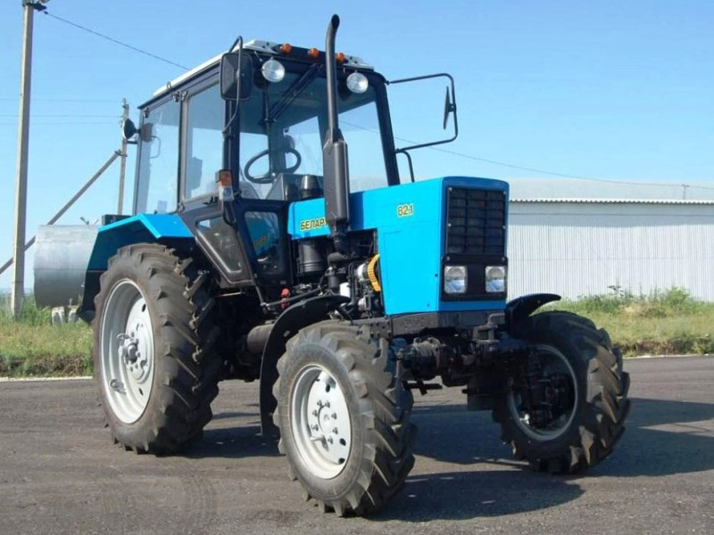

МТЗ Беларус 82.1

МТЗ Беларус 82.1 – це найвідоміший та наймасовіший універсально-просапний трактор, який став справжнім стандартом надійності для фермерів та комунальних служб. Головна відмінність від 82-ї моделі – наявність повного приводу з портальним переднім мостом, що забезпечує високу прохідність і дозволяє впевнено працювати на вологому ґрунті чи в умовах бездоріжжя. Трактор оснащений двигуном Д-243, який цінується за надзвичайну витривалість та невибагливість до якості пального.
Конструкція трактора максимально проста та перевірена десятиліттями, що дозволяє проводити ремонт будь-якої складності навіть у польових умовах. Завдяки роздільно-агрегатній гідросистемі та двошвидкісному валу відбору потужності, 82.1 агрегатується з сотнями видів обладнання: від плугів та сівалок до екскаваторних ковшів та снігоочисних відвалів.
| Параметр | Значення |
|---|---|
| Клас тяги | 1.4 |
| Тип ходової частини | колісний |
| Колісна формула | 4х4 (повний привід) |
| Тип рами | напіврамна конструкція |
| Основне призначення | широкий спектр сільськогосподарських робіт: від підготовки ґрунту до збирання врожаю та транспортних операцій |
| Параметр | Значення |
|---|---|
| Модель | Д-243 |
| Тип двигуна | 4-циліндровий, дизельний, атмосферний, безпосереднє впорскування |
| Спосіб охолодження | рідинне |
| Розташування циліндрів | рядне, вертикальне |
| Робочий об’єм | 4,75 л |
| Номінальна потужність | 60 кВт (81 к.с.) |
| Номінальні оберти | 2200 об/хв |
| Максимальний крутний момент | 298 Н·м |
| Питома витрата палива | 226 – 229 г/кВт·год |
| Параметр | Значення |
|---|---|
| Муфта зчеплення | суха, однодискова, постійно замкнута |
| Тип КПП | механічна, ступенчаста, 9-ступінчаста з понижуючим редуктором |
| Кількість передач | 18 вперед / 4 назад |
| Тип реверсу | відсутній (механічний через редуктор) |
| Діапазон швидкостей (вперед) | 1,9 – 34,3 км/год |
| Вал відбору потужності | двошвидкісний незалежний (540 / 1000 об/хв) та синхронний |
| Діапазон | Передача | Теоретична швидкість, км/год | Передаточне число (загальне) | Тягове зусилля, кН |
|---|---|---|---|---|
| Знижені передачі | 1 | 1,89 | 240,5 | 15,40* |
| Знижені передачі | 2 | 3,21 | 141,6 | 15,40* |
| Знижені передачі | 3 | 5,31 | 85,6 | 15,40* |
| Знижені передачі | 4 | 6,73 | 67,5 | 15,00 |
| Знижені передачі | 5 | 7,72 | 58,8 | 13,10 |
| Знижені передачі | 6 | 9,15 | 49,6 | 11,00 |
| Знижені передачі | 7 | 11,40 | 39,8 | 8,85 |
| Знижені передачі | 8 | 13,30 | 34,1 | 7,60 |
| Знижені передачі | 9 | 25,90 | 17,5 | 3,90 |
| Підвищені передачі | 1 | 2,50 | 181,8 | 15,40* |
| Підвищені передачі | 2 | 4,24 | 107,2 | 15,40* |
| Підвищені передачі | 3 | 7,02 | 64,7 | 14,40 |
| Підвищені передачі | 4 | 8,90 | 51,0 | 11,35 |
| Підвищені передачі | 5 | 10,20 | 44,5 | 9,90 |
| Підвищені передачі | 6 | 12,10 | 37,5 | 8,30 |
| Підвищені передачі | 7 | 15,10 | 30,1 | 6,70 |
| Підвищені передачі | 8 | 17,50 | 25,9 | 5,80 |
| Підвищені передачі | 9 | 34,30 | 13,2 | 3,00 |
| Параметр | Значення |
|---|---|
| Тип коліс | пневматичні шини низького тиску |
| Колісна формула | 4х4 (повний привід з автоматичним підключенням) |
| Типорозмір передніх шин | 11.2 - 20 (або 360/70R24 для посиленого моста) |
| Типорозмір задніх шин | 15.5 R38 (стандарт) |
| Радіус ведучого колеса (заднього) | ~0,77 м |
| Тип переднього моста | ведучий, портальний (з конічними редукторами) |
| Тип підвіски | передня — розсувна пружинна; задня — жорстка |
| Регулювання колії (передня) | 1430 – 1990 мм (ступінчасте) |
| Регулювання колії (задня) | 1400 – 2100 мм (плавне) |
| Дорожній просвіт (кліренс) | 465 мм (під заднім мостом) |
| Агротехнічний просвіт | 645 мм (під рукавами напівлап) |
| Радіус повороту (з підгальмовуванням) | 4,1 – 4,5 м |
| Блокування диференціалу | гідравлічне (з режимами: вимкн/авто/примусово) |
| Гальмівна система | дискова, суха (основна та стоянкова) |
| Параметр | Значення |
|---|---|
| Під час роботи з навантаженням | 13,0 – 14,8 кг/год |
| Під час холостих переїздів | 5,8 – 7,4 кг/год |
| Під час зупинок (холостий хід) | 0,9 – 1,1 кг/год |
| Параметр | Значення |
|---|---|
| Експлуатаційна маса (базова) | 4000 кг |
| Максимальна допустима вага | 6500 кг |
| Довжина / Ширина / Висота | 3930 / 1970 / 2800 мм |
| Колісна база | 2450 мм |
| Об’єм паливного баку | 130 л |
| Параметр | Значення |
|---|---|
| Гідравлічна система | роздільно-агрегатна з гідропідйомником, 45 л/хв |
| Вантажопідйомність навіски | 3200 кг (на осях підвісу) |
| Тип кабіни | безпечна (ROPS), з фільтрацією повітря та підігрівом |
| Запуск двигуна | електростартер 24В (через два АКБ 12В та реле-перетворювач) |